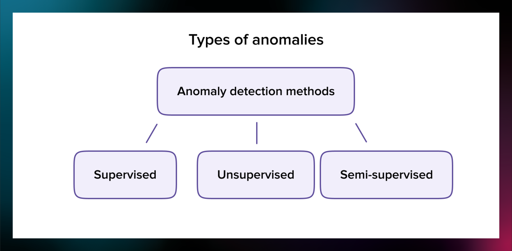
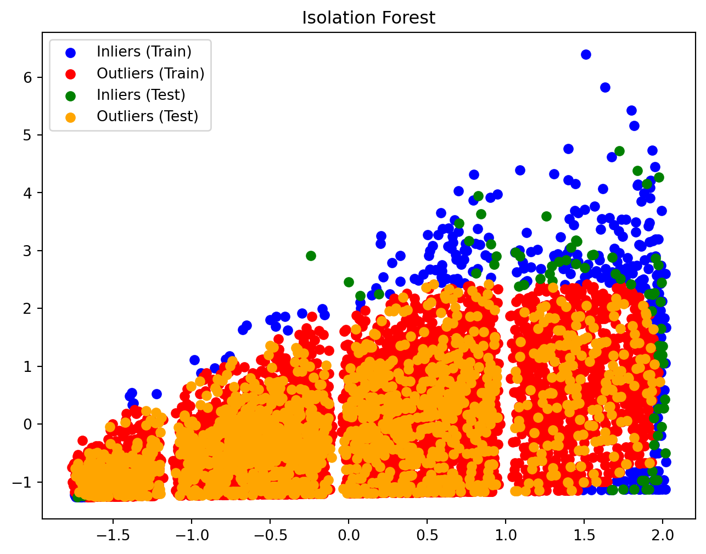
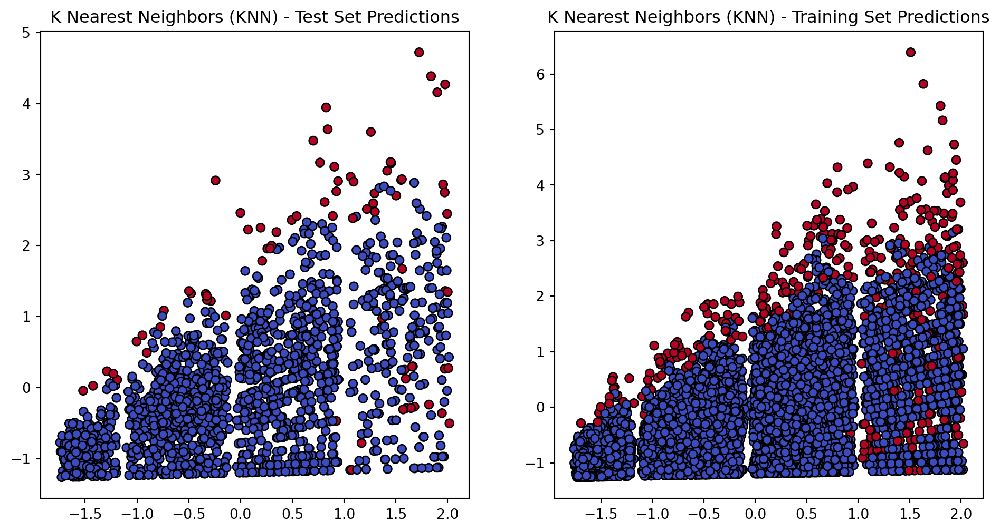
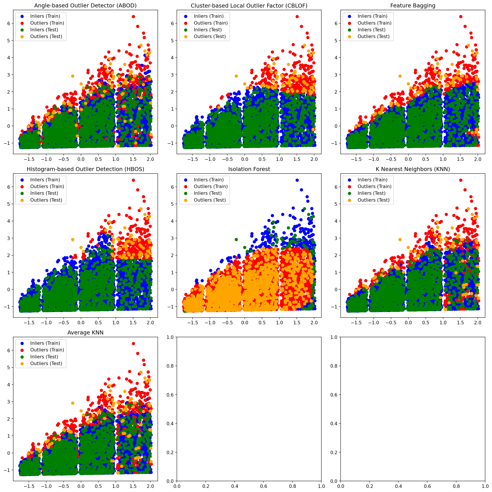

Anomaly detection is one of the most common use cases of machine learning. Finding and identifying outliers helps to prevent fraud, adversary attacks, and network intrusions that can compromise your company’s future.
In this post, we will talk about how anomaly detection works, what machine learning techniques you can use for it, and what benefits anomaly detection with ML brings to a business.
What is an anomaly?
Before talking about anomaly detection, we need to understand what an anomaly is.
Generally speaking, an anomaly is something that differs from a norm: a deviation, an exception. In software engineering, by anomaly we understand a rare occurrence or event that doesn’t fit into the pattern, and, therefore, seems suspicious. Some examples are:
sudden burst or decrease in activity;
error in the text;
sudden rapid drop or increase in temperature.
Common reasons for outliers are:
data preprocessing errors;
noise;
fraud;
attacks.
Normally, you want to catch them all; a software program must run smoothly and be predictable so every outlier is a potential threat to its robustness and security. Catching and identifying anomalies is what we call anomaly or outlier detection.
For example, if large sums of money are spent one after another within one day and it is not your typical behavior, a bank can block your card. They will see an unusual pattern in your daily transactions. This anomaly can typically be connected to fraud since identity thieves try to steal as much money as they can while they can. Once an anomaly is detected, it needs to be investigated, or problems may follow.
Why do you need machine learning for anomaly detection?
This is a process that is usually conducted with the help of statistics and machine learning tools.
The reason is that the majority of companies today that require outlier detection work with huge amounts of data: transactions, text, image, and video content, etc. You would have to spend days going through all the transitions that happen inside a bank every hour, and more and more are generated every second. It is simply impossible to drive any meaningful insights from this amount of data manually.
Moreover, another difficulty is that the data is often unstructured, which means that the information wasn’t arranged in any specific way for the data analysis. For example, business documents, emails, or images are examples of unstructured data.
To be able to collect, clean, structure, analyze, and store data, you need to use tools that aren’t scared of big volumes of data. Machine learning techniques, in fact, show the best results when large data sets are involved. Machine learning algorithms are able to process most types of data. Moreover, you can choose the algorithm based on your problem and even combine different techniques for the best results.
Machine learning used for real-world applications helps to streamline the process of anomaly detection and save the resources. It can happen not only post-factum but also in real time. Real-time anomaly detection is applied to improve security and robustness, for instance, in fraud discovery and cybersecurity.
What are anomaly detection methods?

There are different kinds of anomaly detection methods with machine learning.
Supervised
In supervised anomaly detection, an ML engineer needs a training dataset. Items in the dataset are labeled into two categories: normal and abnormal. The model will use these examples to extract patterns and be able to detect abnormal patterns in the previously unseen data.
In supervised learning, the quality of the training dataset is very important. There is a lot of manual work involved since somebody needs to collect and label examples.
Note: While you can label some anomalies and try to classify them (hence it’s a classification task), the underlying goal of anomaly detection is defining “normal data points” rather than “abnormal data points”. So in real world applications with very few anomaly samples labelled, it’s almost never regarded as a supervised task.
Unsupervised
This type of anomaly detection is the most common type, and the most well-known representative of unsupervised algorithms are neural networks.
Artificial neural networks allow to decrease the amount of manual work needed to pre-process examples: no manual labeling is needed. Neural networks can even be applied to unstructured data. NNs can detect anomalies in unlabeled data and use what they have learned when working with new data.
The advantage of this method is that it allows you to decrease the manual work in anomaly detection. Moreover, quite often it’s impossible to predict all the anomalies that can occur in the dataset. Think of self-driving cars, for example. They can face a situation on the road that has never happened before. Putting all road situations into a finite number of classes would be impossible. That is why neural networks are priceless when working with real-life data in real-time.
However, ANNs almost rocket science level of complexity. So before you try out those, you might want to experiment with more conventional algorithms like DBSCAN, especially if your project is not that big.
Moreover, the architecture of neural networks is a black box. We often don’t know what kinds of events neural networks will label as anomalies, moreover, it can easily learn wrong rules that are not so easy to fix. That is why unsupervised anomaly detection techniques are often less trustworthy than supervised ones.
Semi-supervised
Semi-supervised anomaly detection methods combine the benefits of the previous two methods. Engineers can apply unsupervised learning methods to automate feature learning and work with unstructured data. However, by combining it with human supervision, they have an opportunity to monitor and control what kind of patterns the model learns. This usually helps to make the model’s predictions more accurate.
import pandas as pdimport numpy as npimport matplotlib.pyplot as plt# Import modelsfrom pyod.models.abod import ABODfrom pyod.models.cblof import CBLOFfrom pyod.models.feature_bagging import FeatureBaggingfrom pyod.models.hbos import HBOSfrom pyod.models.iforest import IForestfrom pyod.models.knn import KNNfrom pyod.models.lof import LOF# reading the big mart sales training datadf = pd.read_csv("Train.csv")df.plot.scatter('Item_MRP','Item_Outlet_Sales')
/Library/Frameworks/Python.framework/Versions/3.11/lib/python3.11/site-packages/sklearn/cluster/_kmeans.py:1416: FutureWarning: The default value of `n_init` will change from 10 to 'auto' in 1.4. Set the value of `n_init` explicitly to suppress the warning
super()._check_params_vs_input(X, default_n_init=10)


Option 2
import pandas as pdimport numpy as npimport matplotlib.pyplot as pltfrom sklearn.preprocessing import StandardScalerfrom sklearn.model_selection import train_test_splitfrom sklearn.metrics import classification_reportfrom sklearn.ensemble import IsolationForestfrom sklearn.neighbors import LocalOutlierFactorfrom sklearn.svm import OneClassSVMfrom pyod.models.abod import ABODfrom pyod.models.cblof import CBLOFfrom pyod.models.feature_bagging import FeatureBaggingfrom pyod.models.hbos import HBOSfrom pyod.models.knn import KNN# Load the datasetdf = pd.read_csv('train.csv')# Select relevant features for outlier detectionfeatures = ['Item_MRP', 'Item_Outlet_Sales']X = df[features].values# Standardize the featuresscaler = StandardScaler()X = scaler.fit_transform(X)# Set up the outlier detection algorithmsrandom_state = np.random.RandomState(42)outliers_fraction =0.05classifiers = {'Angle-based Outlier Detector (ABOD)': ABOD(contamination=outliers_fraction),'Cluster-based Local Outlier Factor (CBLOF)': CBLOF(contamination=outliers_fraction, check_estimator=False, random_state=random_state),'Feature Bagging': FeatureBagging(KNN(n_neighbors=35), contamination=outliers_fraction, check_estimator=False, random_state=random_state),'Histogram-based Outlier Detection (HBOS)': HBOS(contamination=outliers_fraction),'Isolation Forest': IsolationForest(contamination=outliers_fraction, random_state=random_state),'K Nearest Neighbors (KNN)': KNN(contamination=outliers_fraction),'Average KNN': KNN(method='mean', contamination=outliers_fraction)}# Split the data into training and testing setsX_train, X_test = train_test_split(X, test_size=0.2, random_state=42)# Set up subplots for visualizationfig, axs = plt.subplots(nrows=3, ncols=3, figsize=(15, 15))axs = axs.flatten()# Fit the models and predict outliersfor i, (clf_name, clf) inenumerate(classifiers.items()): clf.fit(X_train)if clf_name =='Isolation Forest':# Use decision function to get anomaly scores y_train_scores = clf.decision_function(X_train) y_test_scores = clf.decision_function(X_test)# Set a threshold to classify samples as outliers (you may need to adjust this threshold) threshold = np.percentile(y_train_scores, 100* outliers_fraction)# Convert continuous scores to binary labels y_train_pred = (y_train_scores > threshold).astype(int) y_test_pred = (y_test_scores > threshold).astype(int)else: y_train_pred = clf.labels_ # binary labels (0: inliers, 1: outliers) y_test_pred = clf.predict(X_test)# Visualize the results inliers_train = X_train[y_train_pred ==0] outliers_train = X_train[y_train_pred ==1] inliers_test = X_test[y_test_pred ==0] outliers_test = X_test[y_test_pred ==1] axs[i].scatter(inliers_train[:, 0], inliers_train[:, 1], color='blue', label='Inliers (Train)') axs[i].scatter(outliers_train[:, 0], outliers_train[:, 1], color='red', label='Outliers (Train)') axs[i].scatter(inliers_test[:, 0], inliers_test[:, 1], color='green', label='Inliers (Test)') axs[i].scatter(outliers_test[:, 0], outliers_test[:, 1], color='orange', label='Outliers (Test)') axs[i].set_title(clf_name) axs[i].legend()plt.tight_layout()plt.show()
/Library/Frameworks/Python.framework/Versions/3.11/lib/python3.11/site-packages/sklearn/cluster/_kmeans.py:1416: FutureWarning: The default value of `n_init` will change from 10 to 'auto' in 1.4. Set the value of `n_init` explicitly to suppress the warning
super()._check_params_vs_input(X, default_n_init=10)

import pandas as pdimport numpy as npimport matplotlib.pyplot as pltfrom sklearn.preprocessing import StandardScalerfrom sklearn.model_selection import train_test_splitfrom sklearn.metrics import classification_reportfrom sklearn.ensemble import IsolationForestfrom sklearn.neighbors import LocalOutlierFactorfrom sklearn.svm import OneClassSVMfrom pyod.models.abod import ABODfrom pyod.models.cblof import CBLOFfrom pyod.models.feature_bagging import FeatureBaggingfrom pyod.models.hbos import HBOSfrom pyod.models.knn import KNN# Load the datasetdf = pd.read_csv('train.csv')# Select relevant features for outlier detectionfeatures = ['Item_MRP', 'Item_Outlet_Sales']X = df[features].values# Standardize the featuresscaler = StandardScaler()X = scaler.fit_transform(X)# Set up the outlier detection algorithmsrandom_state = np.random.RandomState(42)outliers_fraction =0.05classifiers = {'Angle-based Outlier Detector (ABOD)': ABOD(contamination=outliers_fraction),'Cluster-based Local Outlier Factor (CBLOF)': CBLOF(contamination=outliers_fraction, check_estimator=False, random_state=random_state),'Feature Bagging': FeatureBagging(base_estimator=KNN(n_neighbors=35), contamination=outliers_fraction, check_estimator=False, random_state=random_state),'Histogram-based Outlier Detection (HBOS)': HBOS(contamination=outliers_fraction),'Isolation Forest': IsolationForest(contamination=outliers_fraction, random_state=random_state),'K Nearest Neighbors (KNN)': KNN(contamination=outliers_fraction),'Average KNN': KNN(method='mean', contamination=outliers_fraction)}# Split the data into training and testing setsX_train, X_test = train_test_split(X, test_size=0.2, random_state=42)# Fit the models and predict outliersfor clf_name, clf in classifiers.items(): clf.fit(X_train)if clf_name =='Isolation Forest':# Use decision function to get anomaly scores y_train_scores = clf.decision_function(X_train) y_test_scores = clf.decision_function(X_test)# Set a threshold to classify samples as outliers (you may need to adjust this threshold) threshold = np.percentile(y_train_scores, 100* outliers_fraction)# Convert continuous scores to binary labels y_train_pred = (y_train_scores > threshold).astype(int) y_test_pred = (y_test_scores > threshold).astype(int)else: y_train_pred = clf.labels_ # binary labels (0: inliers, 1: outliers) y_test_pred = clf.predict(X_test)# Visualize the results plt.figure(figsize=(12, 6)) plt.subplot(1, 2, 1) plt.scatter(X_test[:, 0], X_test[:, 1], c=y_test_pred, cmap='coolwarm', edgecolors='k', marker='o') plt.title(f'{clf_name} - Test Set Predictions') plt.subplot(1, 2, 2) plt.scatter(X_train[:, 0], X_train[:, 1], c=y_train_pred, cmap='coolwarm', edgecolors='k', marker='o') plt.title(f'{clf_name} - Training Set Predictions') plt.show()# Evaluate the model performanceprint(f"------ {clf_name} ------")print(f"Train Accuracy: {np.sum(y_train_pred ==0) /len(y_train_pred):.2%}")print(f"Test Accuracy: {np.sum(y_test_pred ==0) /len(y_test_pred):.2%}")print("\nClassification Report:")print(classification_report(y_test_pred, np.zeros_like(y_test_pred), zero_division=1)) # Set zero_division to 1print("\n")
/Library/Frameworks/Python.framework/Versions/3.11/lib/python3.11/site-packages/sklearn/cluster/_kmeans.py:1416: FutureWarning: The default value of `n_init` will change from 10 to 'auto' in 1.4. Set the value of `n_init` explicitly to suppress the warning
super()._check_params_vs_input(X, default_n_init=10)